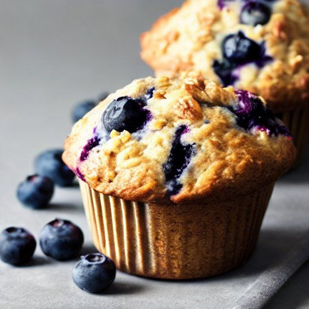

Muffins à l'avoine et aux bleuets
Cuisson: 17 minutes
Ingrédients
-
2 1/3 t de farine tout usage

-
2 t de cassonade
-
2 c. à soupe de poudre à pâte
-
1/2 c. à thé de cannelle moulue
-
1 c. à thé de sel
-
1 1/2 t de flocons d'avoine
-
2 gros oeufs
-
2 t de lait
-
6 c. à soupe de beurre
-
2 t de bleuets frais
Instructions
Préchauffer le four à 190 °C (375 °F).
Dans un grand bol, combiner les ingrédients secs. Incorporer les flocons d'avoine.
- 2 1/3 t de farine tout usage
- 2 t de cassonade
- 2 c. à soupe de poudre à pâte
- 1/2 c. à thé de cannelle moulue
- 1 c. à thé de sel
- 1 1/2 t de flocons d'avoine
Dans un petit bol, battre les oeufs, puis incorporer au fouet le lait et le beurre.
- 2 gros oeufs
- 2 t de lait
- 6 c. à soupe de beurre
Incorporer les ingrédients humides aux ingrédients secs, sans trop les mélanger.
Incorporer 2 t de bleuets frais et remplir aux 3/4 des moules à muffins graissés.
Cuire au four à 190 °C (375 °F) pendant 17 minutes.